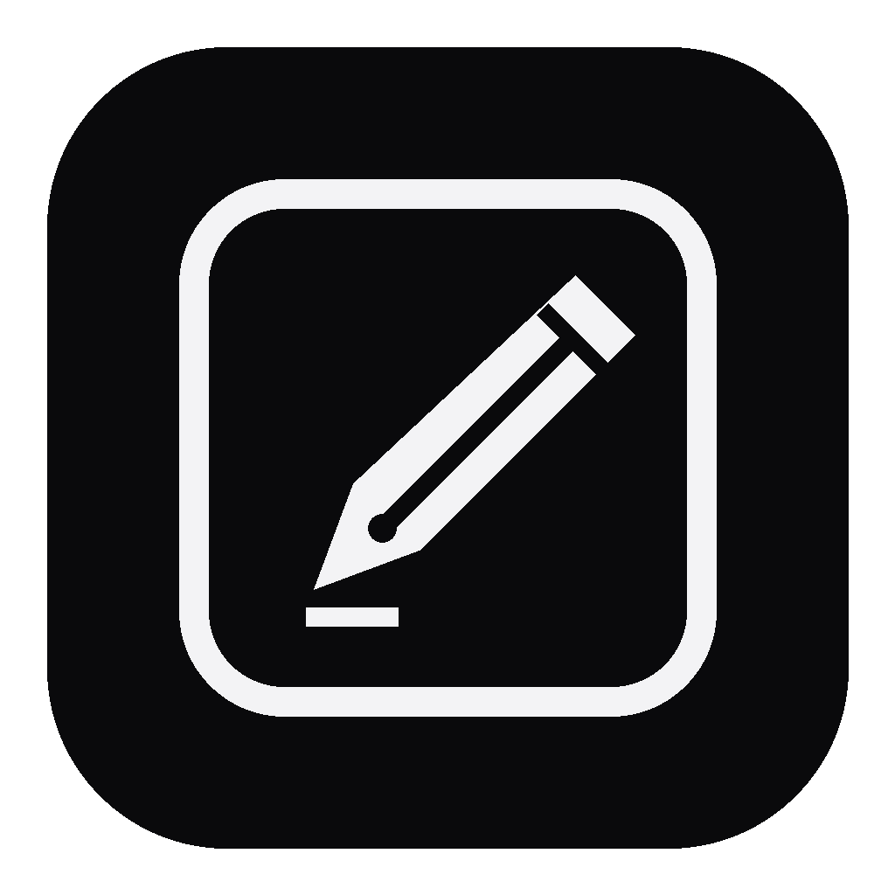

Natural ink
Round and chisel pens respond to pressure from supported pen tablets. A translucent highlighter builds up with each pass.
New · v1.7 A focused whiteboard for macOS and Windows
A quiet canvas for working through problems. Write naturally with a pen tablet, snap a straight line with Shift, highlight what matters and keep your board close.
Version 1.7 previews · macOS 13+ · Windows 10/11 x64.
Mac installation · Windows installation
What's new in 1.7
Hold Shift while you draw and the stroke becomes a clean line from where you started.
Every tool remembers its own size. Change it with the bracket keys or one-tap presets, and see it in a live brush preview.
Zoom from 10% to 400%, around your pointer. Pinch on a Mac trackpad, fit the whole board, and pan with Space.
Drop image files straight onto the board, then nudge them into place with the arrow keys.
Copy the whole board as an image and paste it into a chat, an email or your notes.
Both downloads are now finished apps: a universal Mac app and a single Windows EXE. Nothing to build or install.
Made for working things out
Round and chisel pens respond to pressure from supported pen tablets. A translucent highlighter builds up with each pass.
Paste or drop images, move and resize them, then write or highlight on top. The eraser only removes ink.
A white board with a dot grid, or switch to black and your black ink turns white automatically.
Boards autosave for recovery. Save editable boards, export the full canvas as PNG, or copy it in one keystroke.
Keyboard
Shown for Mac. On Windows, use Ctrl for ⌘.
Read the user guideEvery tool and shortcut · PDF · 3 pagesInstall on Mac
Download for Mac. Safari unzips it for you; otherwise double-click the ZIP in Finder.
Drag problem-slate.app into your Applications folder.
The app isn't notarized by Apple yet, so macOS asks first. On macOS 15 or later, open it once, then go to System Settings → Privacy & Security and click Open Anyway. On macOS 13–14, Control-click the app, choose Open, then Open again.
A universal app for Apple silicon and Intel Macs running macOS 13 or later. It's compiled and its automated tests pass on a macOS build machine, but this release hasn't yet been hands-on tested on a Mac or with pen tablets. Updating from 1.6? Your .slate boards and recovery data carry over.
Install on Windows
Download for Windows, then right-click the ZIP and choose Extract All.
Double-click problem-slate.exe in the extracted folder. Everything it needs is inside the EXE.
The app isn't code-signed yet, so SmartScreen may show "Windows protected your PC". Choose More info, then Run anyway.
Version 1.7 for Windows 10/11 x64 passes its automated board tests on a Windows build machine, but hasn't yet been hands-on tested on Windows PCs or with pen tablets. Windows boards use .wslate and aren't interchangeable with Mac .slate files. Export or copy a PNG to share between them.

Open a clean board and start writing.